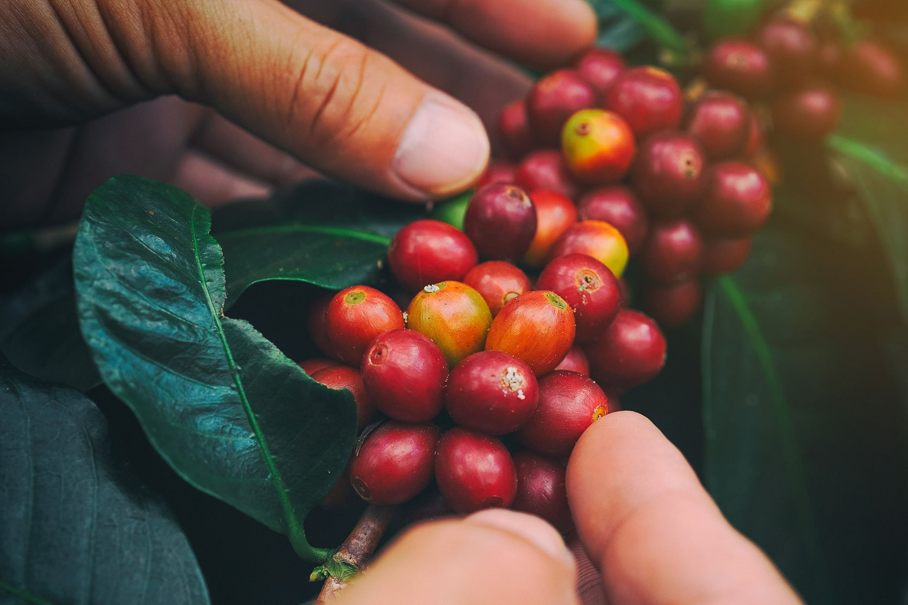
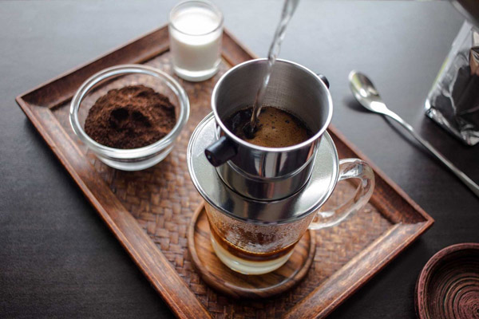
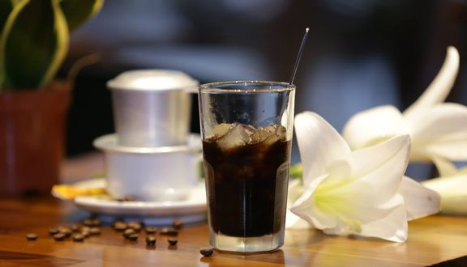

What is traditional coffee?
Many people still wonder what is traditional coffee? Is the coffee mixed with okra and other flavors? With many years of experience in the coffee roasting, processing and packaging industry, Coffee Shop would like to assure you that it is not. Let's read the entire article below to listen to share useful information about this coffee.
Traditional coffee is pure roasted coffee in the style of Vietnamese coffee, brewed in a filter style. Some people mistakenly believe that traditional coffee is coffee with beans, corn, caramel, etc. solid black but that's exactly "dirty coffee" not traditional coffee.
The first characteristic when it comes to traditional pure roasted coffee is bold - bitter - strong and Robusta coffee always accounts for a high percentage of ingredients or is entirely from Robusta.

coffee-in-vietnam
Some salient features in the process of forming traditional gu coffee roasted and ground:
+ Processing green coffee: Robusta is dried under natural sunlight (dry processing), this method is most commonly applied in Vietnam, creating a full coffee flavor, strong physical strength and especially near-reduction. Like the completely sour taste of coffee beans, it is often difficult to recognize the sour taste of traditional coffee when enjoying.
+ Degree of roasting: Traditional pure coffee is roasted darkly, giving the coffee a strong bitter taste, dark brown water and eliminating all the sour taste.
+ Impregnating with butter, salt (or not): The impregnating butter helps to form an oil coating on the outside, helping the coffee beans retain good flavor and create fat; at the same time, it helps the coffee after grinding to have a "smooth" and easier to prepare. Salt helps coffee taste less "pale", satisfying the taste of "slightly salty" of most Vietnamese people. Butter and salt are considered the basic spices in creating traditional roasted coffee.
+ Preparation: usually traditional roasted coffee is made with a traditional Vietnamese filter

traditional-vietnamese-coffee
In fact, each method has its advantages and disadvantages. What Coffee Shop wants to achieve is that Vietnam's filter coffee culture is very beautiful, very unique, and needs to be preserved. The most important thing is still a good quality and clean cup of coffee that is pure and natural, you already have a golden health.
What do you think about traditional filter coffee - the pride of Vietnamese people?
Pure roasted coffee is prepared with a good heat-retaining aluminum filter, which has become a typical cultural beauty of Vietnamese people. Unlike machine coffee originating from Western countries in a busy and busy lifestyle, filtered coffee chooses to drink slowly, sipping thoughtfully.
Can be enjoyed at any time of the day, rich flavored coffee has gradually become a familiar drink of workers, drivers, office workers and even successful businessmen. Each person chooses for themselves a type of coffee, it can be black stone, stone brown, silver faint. As long as it helps to keep the mind awake, mentally happy, full of energy to start a hard working day.
Rustic coffee, rich and attractive taste
In the world, only Vietnam has filter coffee. And this special way of mixing has made international friends when visiting the S-shaped strip of land all want to experience and enjoy it. With the aluminum filter, all the original flavor of the coffee beans is preserved. The boiling water will soak into the smooth, previously roasted and ground coffee powder, then crept and filtered through each small hole, falling into the most quintessential and rich coffee drops. Finally, with a breakthrough, adding condensed milk, milk coffee or “bac xiu” has become a famous drink of Vietnamese people.
coffee-and-flower
The experience of iced milk coffee with filter is a passionate scent spreading throughout the palate, a rich coffee taste that blends on the tip of the tongue and finally a sweet, pleasant aftertaste. A drink that pleases everyone. Because it has both the rich flavor of the original coffee, but it is also extremely delicate thanks to the sweet and fatty taste of condensed milk. Just one sip and you will agree that the iced milk coffee with filter is worthy of the quintessence of Vietnamese coffee.
Coffee Shop believes that the traditional coffee flavor will always go with the years, showing no signs of being outdated. Please contact us immediately if you need information about any product.
comemnt